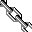

I am interested in bridging the divide between analog terrestrial radio infrastructure and new intangible digital streaming infrastructures.
Whereas conventional radio and its listeners are intractably linked to a geographic center, streaming platforms typically prompt the discovery of music and speech through opaque, aspatial metadata-based systems of recommendation.
I aim to reinterpret the latter through spatial means, and appreciate the subversive potential of so-called "obsolete" technologies like the former.Some other stuff I'll be thinking about:
